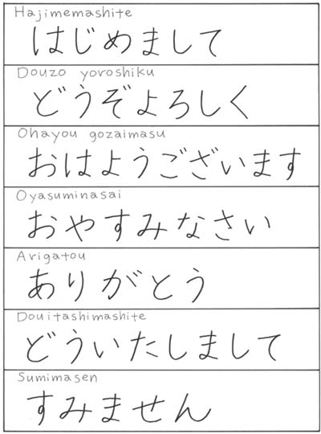

Nebo můžete také nahlednout na základní tabulku hiragany.
| Hajimemashite. はじめまして。 | Rád vás poznávám. |
| Dōzo yoroshiku どうぞよろしく | Těší mě |
| Ohayō gozaimasu おはようございます | Dobré ráno |
| Oyasuminasai おやすみなさい | Dobrou noc |
| Arigatō gozaimasu ありがとうございます | Děkuji |
| Dō itashimashite どういたしまして | Nemáte zač/Rádo se stalo |
| Sumimasen すみません | Promiňte/Omlouvám se |
| < | ^ | > |